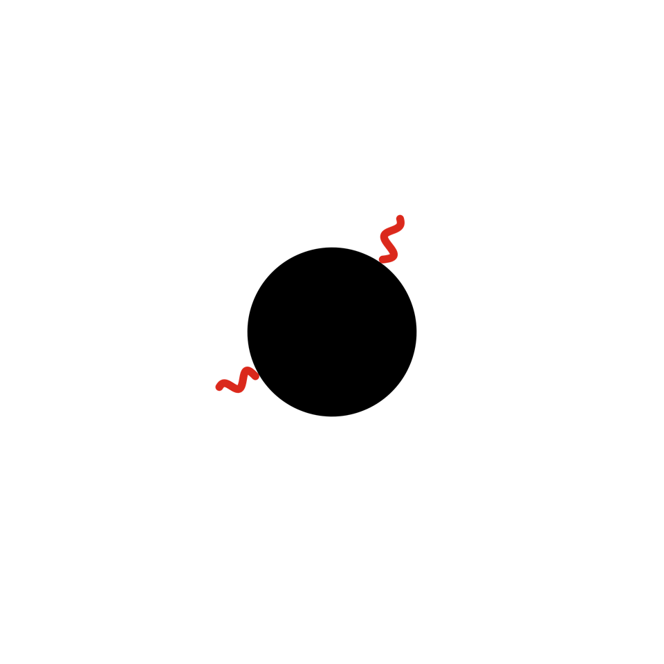
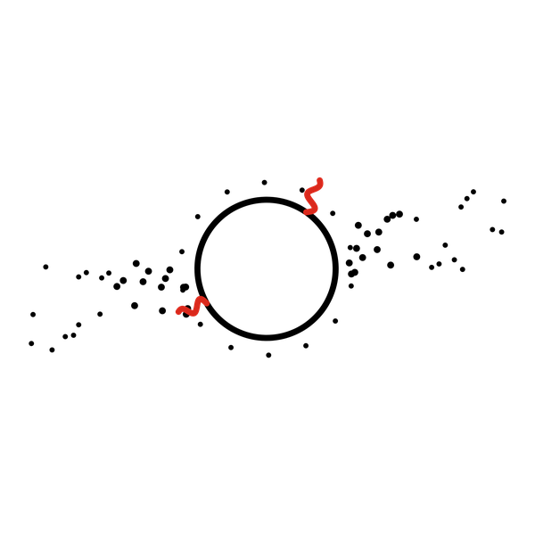

Cuento 9 de 10 · Arco II · Ohr
La distancia

Versión sonora en producción. No será este texto leído en voz alta, sino una pieza propia.
Al principio la Luna estaba tan cerca que, de haber alguien para verla, se habría visto diez o veinte veces más ancha que hoy. No digo que yo la viera: en ese tiempo no veía nada. Me repartía en el polvo caliente que quedó después del choque, en el hierro que se hundía hacia el centro de la Tierra y en la roca que salió despedida y no quiso volver. De ese desprendimiento se hizo ella. Me gusta pensar que la Luna es lo que la Tierra no supo sostener.
Estaba tan cerca que las mareas eran montañas que caminaban. Nadie las medía. No había nadie que necesitara saber la hora.
Luego empezó a irse. No de golpe: se va como se van las cosas que no quieren hacer ruido. Unos centímetros cada año, lo que crece una uña. Durante millones de años eso no le importó a nadie.
Pero hubo un tiempo, y es este, en que su tamaño en el cielo casi coincidió con el del Sol. El Sol es unas cuatrocientas veces más ancho, y está unas cuatrocientas veces más lejos. Esa casualidad es la única puerta que tengo.

Cuando la Luna cubre al Sol, el día se equivoca. Los gallos cantan a deshoras, aparecen las estrellas, alguien llora y alguien se ríe. Y yo, que estoy en todo pero nadie me nota, por fin tengo forma: un círculo negro con una corona de luz.
Duro unos minutos. Después la Luna sigue su camino, un poco más lejos que la vez anterior.
Algún día no alcanzará a cubrirlo. Ese día la puerta se cerrará y nadie se dará cuenta, porque nadie habrá estado esperando.
Por eso les pido una cosa, a ustedes, que todavía pueden verme: cuando pase la sombra, cuéntenlo. Una palabra basta. Así la ventana se queda abierta un poco más.